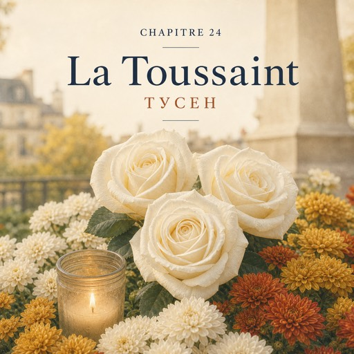

Le samedi 1er novembre — субота, 1 листопада
Les chrysanthèmes n'attendent plus.
Хризантеми більше не чекають.
La veille au soir, Karim a sorti tous les pots de l'atelier.
Напередодні ввечері Карім виніс із майстерні всі горщики.
Ce matin, ils sont partout : devant la porte, sous la vitrine, le long du comptoir.
Сьогодні зранку вони всюди: перед дверима, під вітриною, уздовж прилавка.
Cinquante pots. Jaunes, blancs, rouge sombre.
П'ятдесят горщиків. Жовті, білі, темно-червоні.
C'est la Toussaint.
Сьогодні Тусен — День усіх святих.
— Aujourd'hui, on fleurit les tombes, dit Solange. Aujourd'hui, on ne demande pas pour qui. On sait. On demande seulement combien.
— Сьогодні прикрашають могили квітами, — каже Соланж. — Сьогодні ми не питаємо, для кого. Ми знаємо. Питаємо тільки скільки.
— Et qu'est-ce qu'on dit d'autre ?
— А що ще казати?
— Le moins possible. Bonjour, merci, bonne journée. Les gens ne viennent pas pour parler. Ils viennent se souvenir.
— Якомога менше. Добрий день, дякую, гарного дня. Люди приходять не для розмов. Вони приходять згадати.
Karim porte les pots sur le trottoir, deux par deux.
Карім виносить горщики на тротуар, по два за раз.
Il n'a pas ses écouteurs aujourd'hui.
Сьогодні він без навушників.
C'est samedi, et la boutique est pleine. Mais les voix restent basses.
Субота, і магазин повний. Але голоси лишаються тихими.
Les gens choisissent un pot, paient, disent merci, partent vers le cimetière.
Люди вибирають горщик, платять, кажуть «дякую» і йдуть до цвинтаря.
Beaucoup portent déjà des fleurs dans les bras.
Багато хто вже несе квіти в оберемку.
Une boutique pleine de monde, et pleine de silence.
Магазин, повний людей — і повний тиші.
Personne n'achète pour offrir. Aujourd'hui, les fleurs, c'est pour la mémoire.
Ніхто не купує в подарунок. Сьогодні квіти — це для пам'яті.
— Qu'est-ce qu'ils font, là-bas ? demande Natalia entre deux clients.
— А що вони там роблять? — питає Наталя між двома клієнтами.
— Ils lavent la tombe. Ils déposent les pots. Ils allument une bougie.
— Миють могилу. Ставлять горщики. Запалюють свічку.
Ils restent un peu. Et ils rentrent.
Трохи побудуть. І йдуть додому.
À onze heures, une dame s'arrête devant les pots blancs. Elle les regarde longtemps.
Об одинадцятій біля білих горщиків зупиняється пані. Вона довго на них дивиться.
— Vous en voulez combien de pots ? demande Natalia.
— Скільки вам горщиків? — питає Наталя.
Deux. Les plus blancs. Seize euros.
Два. Найбіліші. Шістнадцять євро.
La dame paie, et elle ne part pas tout de suite.
Пані платить — і не йде одразу.
Elle dit que sa mère aimait les blanches.
Вона каже, що її мама любила білі.
Qu'autrefois, chez sa mère, il y avait des fleurs sur la table toute l'année, même en hiver.
Що колись давно в маминій хаті квіти стояли на столі цілий рік, навіть узимку.
« Aimait. » « Avait. » Natalia n'a pas encore appris ces formes.
«Aimait» — «любила». «Avait» — «були». Цих форм Наталя ще не вчила.
Elle les comprend quand même.
Але все одно їх розуміє.
— Elles tiennent bien dehors, dit-elle doucement.
— Вони добре стоять надворі, — тихо каже вона.
La dame sourit, prend un pot sous chaque bras et sort.
Пані всміхається, бере по горщику під руку й виходить.
Vers midi, monsieur Vasseur entre. Il enlève son chapeau.
Близько полудня заходить мсьє Вассер. Знімає капелюха.
On est samedi. Pas jeudi.
Сьогодні субота. Не четвер.
— Bonjour, madame.
— Добрий день, пані.
— Bonjour, monsieur Vasseur.
— Добрий день, мсьє Вассере.
— Trois roses blanches, s'il vous plaît.
— Три білі троянди, будь ласка.
Il ne dit pas « comme d'habitude ». Trois roses. Pas une.
Він не каже «як завжди». Три троянди. Не одна.
Natalia choisit les trois plus belles. Elle coupe les tiges, un centimètre. Elle ne demande rien.
Наталя вибирає три найгарніші. Підрізає стебла на сантиметр. Нічого не питає.
Elle compte sans rien dire : trois fois trois euros, neuf euros.
Рахує мовчки: тричі по три євро — дев'ять євро.
Les neuf euros sont déjà sur le comptoir.
Дев'ять євро вже лежать на прилавку.
— Sans papier, merci.
— Без паперу, дякую.
— Bien sûr, monsieur Vasseur.
— Звісно, мсьє Вассере.
Aujourd'hui, il ne souhaite pas une bonne journée. Il salue de la tête.
Сьогодні він не бажає гарного дня. Він киває на прощання.
Sur le trottoir, il remet son chapeau et il s'en va, droit, sans se presser.
На тротуарі він надягає капелюха й іде — рівно, неквапом.
Solange le regarde partir. Un peu plus longtemps que d'habitude.
Соланж дивиться йому вслід. Трохи довше, ніж звичайно.
Puis elle retourne à ses pots.
Потім повертається до своїх горщиків.
Personne ne demande rien.
Ніхто ні про що не питає.
L'après-midi passe comme le matin : des pots, des voix basses, des mercis.
По обіді все як зранку: горщики, тихі голоси, «дякую».
À six heures, Karim allume la vitrine. Il reste très peu de chrysanthèmes.
О шостій Карім вмикає світло у вітрині. Хризантем лишилося зовсім мало.
À sept heures, Solange tourne la clé.
О сьомій Соланж повертає ключ.
Sur l'ardoise, il y a encore la ligne : « chrysanthèmes en pot, huit euros ».
На ардуазі ще стоїть рядок: «хризантеми в горщику, вісім євро».
Devant la porte, il reste deux pots. Deux, sur cinquante.
Перед дверима лишилося два горщики. Два з п'ятдесяти.
Ils n'ont pas attendu pour rien.
Вони чекали недарма.